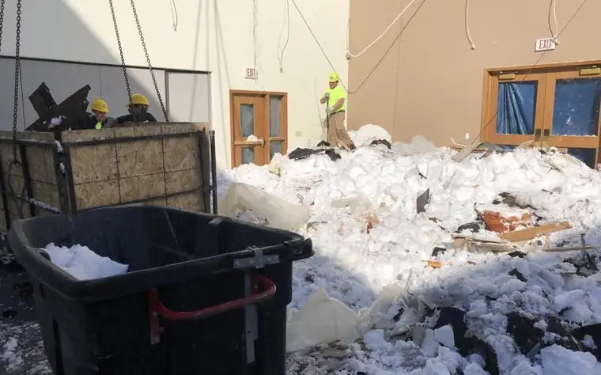
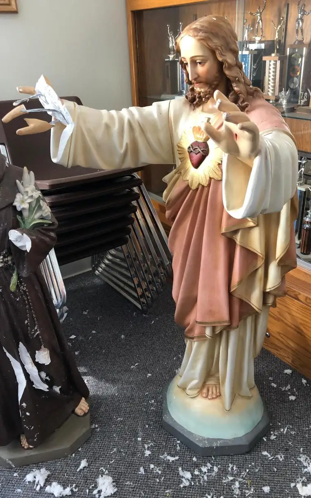
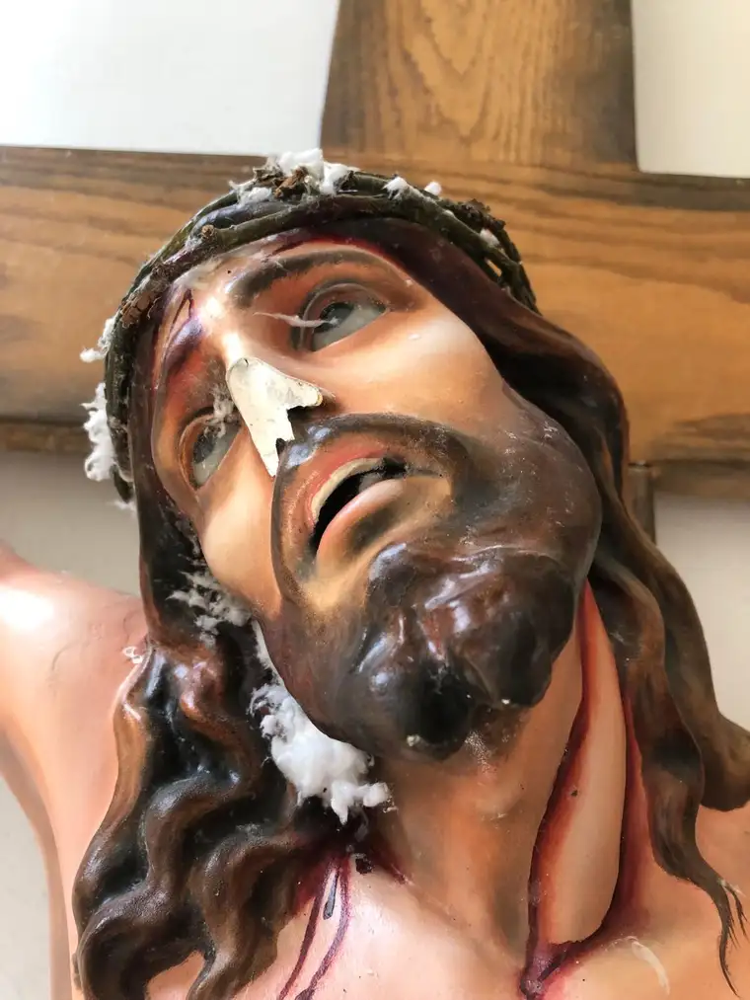
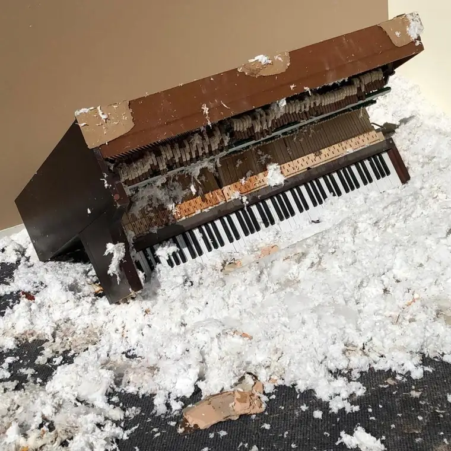
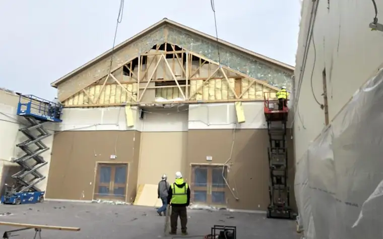

MOORHEAD — Parishioners of St. Francis de Sales Catholic Church in north Moorhead couldn’t have imagined the Lenten burden this year’s penitential season would dump on them — or the miscommunication that possibly saved lives this spring.

Crews start the cleanup process at Moorhead’s St. Francis de Sales Catholic Church, where a portion of the roof collapsed on March 10. Special to The Forum
Parish Management Coordinator Swede Stelzer was among the first to be contacted that bright morning of Sunday, March 10, with news that a central portion of the parish roof had collapsed under the weight of snow. It was the first in a series of roof collapses the area would see after a winter of frigidity and periods of unrelenting snowfall that piled up throughout the area.
Busily blowing snow out of his driveway in south Moorhead, Stelzer hadn’t noticed his phone “blowing up” with texts until well after the disaster was discovered at 601 15th Ave. N. He said their parish priest, the Rev. Raúl Pérez-Cobo, was first notified; from there, the maintenance crew and fire department received word of the event.
“The church was full of natural gas,” Stelzer said. “They evacuated the gas out of the building.”
Finally, Stelzer looked at his phone, and, alarmed, drove north to the church.
“By the time I got there, the fire department was already shoveling stuff back out to seal out winter from coming into the gathering space,” he said.

This Jesus statue was damaged by the March 10 roof collapse at St. Francis de Sales Catholic Church in Moorhead. Special to The Forum
He didn’t make it home until almost 8 p.m., he says, staying to help a group of men, along with Pérez-Cobo, clear the grounds for maneuverability and take remaining snow from the roof. By March 22, cleanup was complete, and the church had begun plans to reconstruct the broken parts of the building.
“The building was damaged, but it can be fixed,” Stelzer said.

For Easter Vigil on Saturday, April 20, parishioners gathered at St. Elizabeth Catholic Church in Dilworth to celebrate the coming of Jesus Christ with three other parishes, where they blessed Paschal candles. St. Francis de Sales’ candle will be lit for the first time when church members return to the building for worship in the coming weeks.
The collapse has brought a community together, with various groups and parishes of different faiths lending a hand.
“You don’t want to see it happen, but it happened,” Stelzer’s wife, Linda, said of the roof collapse. “Now we see the blessing that came with it.”
Unexpected blessing
During the cleanup, Stelzer noticed the clock seemed to have stopped at 9:43 a.m. The time becomes significant to the part of the story he and others deem “divine intervention.”
“They said we’d be getting some heavy snow, 6 to 12 inches,” he recalled of the day prior, sharing that Pérez-Cobo felt it necessary to call off Masses at their sister church in Georgetown, Minn., due to unsafe travel conditions.
“He didn’t think he could drive up there the next morning,” Stelzer said.
But it was never his intent to call off Masses at the Moorhead church.
“He speaks with a real Spanish ‘brogue,’ and it’s possible the media misunderstood him,” Stelzer said. “It got out publicly that all Masses and activities (for both churches) were canceled, but Mass is never canceled.”
When Pérez-Cobo realized the miscommunication, he felt terrible, Stelzer shared. Only later did they all realize how the “mistake” likely saved lives.
“We were supposed to have a Boy Scout French toast dinner the next morning — they’d just had their Pinewood Derby race the night before,” Stelzer said. “The boys would have been in the parish center getting ready for the breakfast around the time the clock stopped.”
Additionally, people would have been coming into Mass had it not been accidentally canceled.
“There could have been serious injury,” he said. “(The snow and building parts) started toppling into the parish center wall and worked its way as a domino toward the kitchen, and who knows? The way it was, Mass was canceled, nobody was in the building, so therefore we escaped injury.”

Another view of the damage caused by a March 10 roof collapse at Moorhead’s St. Francis de Sales Catholic Church. Special to The Forum
Rebuilding
The blessings don’t end there, Stelzer said, with Fargo’s Church of Jesus Chris of Latter-day Saints reaching out soon after with the offer of using their facility, as well as the promise of assembling a crew to come over and help the Catholic church. From there, additional churches reached out, including Our Savior Lutheran Church in Moorhead, St. Joseph Catholic Church in Moorhead and St. Elizabeth in Dilworth.
“We’ve had offers of help in both manpower and facilities and have gotten (unsolicited) donations through the internet,” he said.
The church offers a Spanish Mass, so there was a call out to the Hispanic community to help clear snow from the rest of the roof.
“I see all of these people on the roof clearing it,” parishioner Rene Gonzales said. “It went to amazing mode instead of disaster mode… It felt pretty good.”
To inform parishioners of progress, Stelzer started a blog on the church’s Facebook page and posted updates on the church website. A video on the website shows, among other images, the broken corpus of Jesus on the crucifix, along with other shattered pieces, a demolished piano and snow mixed with shards and larger building chunks that mixed during the collision.
He anticipates the parish will be back worshiping in their home in June or July, though work on the full parish center won’t be complete until the fall.
Repair expenses likely will range in the mid-six figures, he said. A permit filed April 1 details initial work for roof trusses and weatherproofing, all of which is estimated to cost $250,000. Another permit will be filed for additional work, the permit said.
The church also will replace the 10-year-old shingles on the entire roof, and church leaders want everything to match, he said in a blog post.

Crews recently installed rafters at St. Francis de Sales Catholic Church in Moorhead a month after snow caused the roof to collapsed. Special to The Forum
Work to restore the church after the roof collapse began earlier this month, and rafters arrived in mid-April so they could be installed. A late spring storm on April 11 briefly stalled progress as volunteers worked to shovel out the open hall, but the next day, they got it all cleared out in a couple of hours, just in time for the Friday fish fry, Stelzer said.
Community support
This isn’t the first time the church has gone through construction. Built in 1949, the old church was replaced in 1996 to make it handicapped-accessible and bring it into the 21st century.
Parishioners like Florence Verworn have an emotional connection to the building. The collapse was hard on her.
“I felt like crying every time I walked into church,” she said. “It’s hard to explain. I just felt like such a loss.”
But St. Elizabeth and St. Joseph were so welcoming, she said. St. Elizabeth also opened their doors to parishioners during the 2009 flood.
The congregation has been blessed with generosity. Several groups have donated funds, and church members raised about $1,500 selling homemade tamales. Parishioners have written extra checks, and people from different parts of the country also have sent money.
A touching donation came from the Lutheran Church of the Good Shepherd in Moorhead, where children unanimously decided to donate money from their “noisy collection” — it’s a collection during which children bring up money and give the funds to a local effort — to St. Francis de Sales.
“The whole community has opened their arms to help us,” Stelzer said. “I thought that was so neat that the little kids’ offertory is going to be sent to St. Francis.”
Despite his own shock at the news, fellow parishioner Jim Dottenwhy marveled at how, “in all situations of our lives, whether in sickness or whatever, there’s always something to be thankful for.”
At the end of the day, he said, “The church is not a building. The church is the people. … We still have our faith, and the church is still alive.”
On the church website, Stelzer noted the many blessings that have come since the collapse.
“At times, we may feel inconvenienced, but we must surely be thankful for all the blessings that God has bestowed on us. Our family is truly one with God!” he wrote.
[For the sake of having a repository for my newspaper columns and articles, I reprint them here, with permission, a week after their run date. The preceding ran in The Forum newspaper on April 21, 2019.]